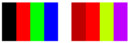

Практическое руководство. Преобразование цветов изображения
Перевод добавляет значение к одному или нескольким из четырех компонентов цвета. В следующей таблице приведены элементы матрицы цветов, представляющих переводы.
| Преобразуемый компонент | Элемент матрицы |
|---|---|
| Красный | [4][0] |
| Зеленый | [4][1] |
| Синий | [4][2] |
| Коэффициент альфа | [4][3] |
Пример
В следующем примере создается Image объекта из файла ColorBars.bmp. Затем код добавляет 0,75 красного компонента каждого пикселя в изображении. Исходное изображение отображается вместе с преобразованные изображения.
Ниже показан исходное изображение в левой части и преобразованные изображения справа:

Ниже перечислены эти векторы четырех полос до и после преобразования. Обратите внимание на то, что так как максимальное значение для компонента цвета равно 1, красный компонент во второй строке остается неизменным. (Аналогичным образом, минимальное значение для компонента цвета — 0).
| До преобразования | Перевод |
|---|---|
| Черный (0, 0, 0, 1) | (0.75, 0, 0, 1) |
| Красный (1, 0, 0, 1) | (1, 0, 0, 1) |
| Зеленый (0, 1, 0, 1) | (0.75, 1, 0, 1) |
| Синий (0, 0, 1, 1) | (0.75, 0, 1, 1) |
Image image = new Bitmap("ColorBars.bmp");
ImageAttributes imageAttributes = new ImageAttributes();
int width = image.Width;
int height = image.Height;
float[][] colorMatrixElements = {
new float[] {1, 0, 0, 0, 0},
new float[] {0, 1, 0, 0, 0},
new float[] {0, 0, 1, 0, 0},
new float[] {0, 0, 0, 1, 0},
new float[] {.75f, 0, 0, 0, 1}};
ColorMatrix colorMatrix = new ColorMatrix(colorMatrixElements);
imageAttributes.SetColorMatrix(
colorMatrix,
ColorMatrixFlag.Default,
ColorAdjustType.Bitmap);
e.Graphics.DrawImage(image, 10, 10, width, height);
e.Graphics.DrawImage(
image,
new Rectangle(150, 10, width, height), // destination rectangle
0, 0, // upper-left corner of source rectangle
width, // width of source rectangle
height, // height of source rectangle
GraphicsUnit.Pixel,
imageAttributes);
Компиляция кода
Предыдущий пример предназначен для работы с Windows Forms и требует PaintEventArgse, который является параметром Paint обработчик событий. Замените ColorBars.bmp в вашей системе путь и имя файла изображения.